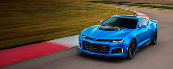

El mundo según Hennessey gira en torno a una filosofía fundamental: añadir mucho poder y potencia. Es por ello que en este vídeo exprimen un Chevrolet Camaro ZL1 en un banco de pruebas.
El preparador de coches americano ha cogido el ya bastante potente Camaro ZL1 de Chevrolet y le ha añadido un par de turbos a su motor V8. Los dos nuevos compresores ayudan a subir la potencia del ZL1 a máximos bastante considerables (el ruido que hacen también), a juzgar por el vídeo de abajo.
VIDEO HENNESSEY CAMARO ZL1
¿Cómo son los datos entonces? El Chevrolet Camaro ZL1 sale de fábrica con 588 CV que consiguen hacer el 0-100 km/h en 3,9 segundos y alcanzar una velocidad máxima de 296 km/h. Según los datos reflejados en el banco de pruebas, el Camaro de Hennessey debería con sus 1.160 CV destrozar esas cifras mejorándolas ostensiblemente.
No obstante creo que el coche tiene alguna ayuda más aparte de los dos comentados turbos para conseguir esas cifras, como por ejemplo gasolina de competición. Ah y en el vídeo también puedes ver cómo son de resistentes las correas que sujetan los coches en los bancos de pruebas. Menos mal..